UI/UX,User Research
c4g Automation: Website + Mobile app design
Overview
The Client:
c4g Automation was established in 2002. by a hard working Indian family with 10 years of experience in the automation business. The company sells a variety of automatic gates, doors, sliding gates and motors.
The challenge:
The owners want to revamp their website in order to appeal to new customers and showcase the wide selection of affordable products.
Outcome:
A usable and aesthetically appealing online platform.
Role:
Lead UX Designer (research, interaction design, visual design).
Research
During the research phase, I sought to understand the current state of the slot-booking features. my intention for the research was to uncover the needs and frustrations of the target user to better understand how to appeal to them
Research goals:
- Define user's motivations, needs, and frustrations when browsing the website, and using app
- Understand what makes a customer’s product experience satisfying.
- Understand industry standards and what features/services/offerings give local stores a competitive edge in Bangalore,India.
- Identify areas of improvement for the company website and new app
Secondary Research-Market research
First, I conducted secondary research to familiarize myself with the national and local areas. I collected information from articles and case studies on trends, challenges, and areas for growth to identify industry standards and user expectations.
Secondary-Research & competitive analysis
To build off my secondary research, I analyzed some of c4g Automation competitors in the Automation industry. I uncovered the strengths and weaknesses of the business's direct competitors Truston and Technospacio. In addition, I performed a competitive analysis on elite gates which are indirect competitors of company.

My competitive analysis produced the following insights
- Most individual stored don't have mobile application
- All of the competitor companies have responsive websites, with high quality images and social media including
- Include latest UX trends and remove the confusion
- Registration process should be clean and simple
Primary-Research Interviews
Empathizing with the target audience is a crucial step in the design thinking process, so it was essential to go out in the field and interact with real customers. I spent a day at c4g Automation chatting with customers about their motivations, needs, and frustrations while choosing products there and other companies in the area.
Result assumptions:
- They want to include emergency service
- User prefer to book a slot in online only
- They want to reduce multiple steps
After completing the Interviews, I wrote down all of the responces on a sticky notes and begain to cluster them based on topic.
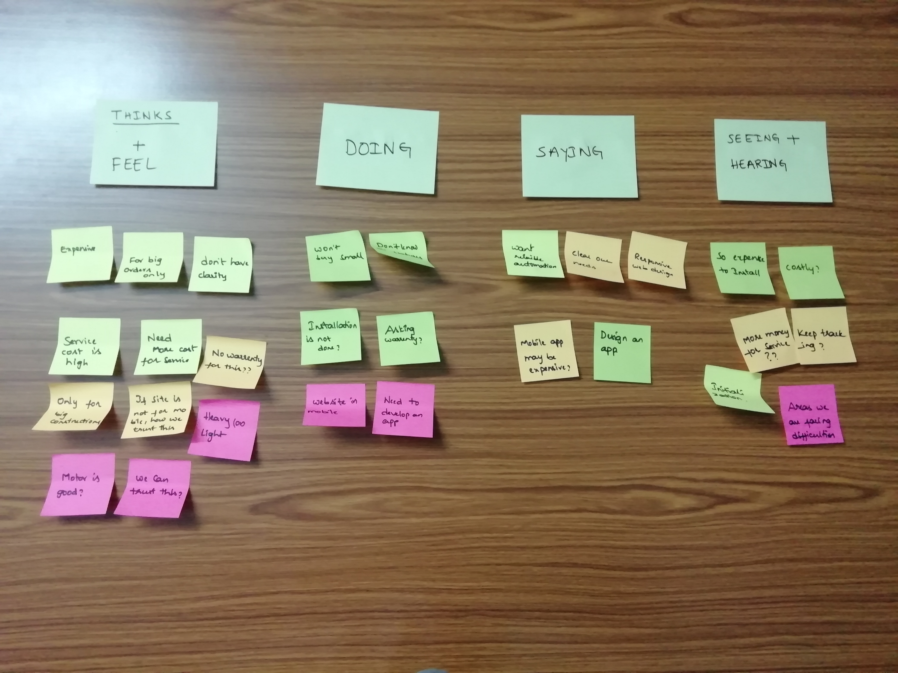Clustering Interview responces allowed me to discover trends and patterns from which insights could be constructed. through this process I identified several user needs
- Customer expect mobile app
- They want to include emergency service
- Service booking
- Customer support for user quiries
Provisional Personas:
I created provisional personas that reflected the data I had collected through user research. Getting a sense of the general target audience helped me think about how the business would appeal to different demographics with varying needs.
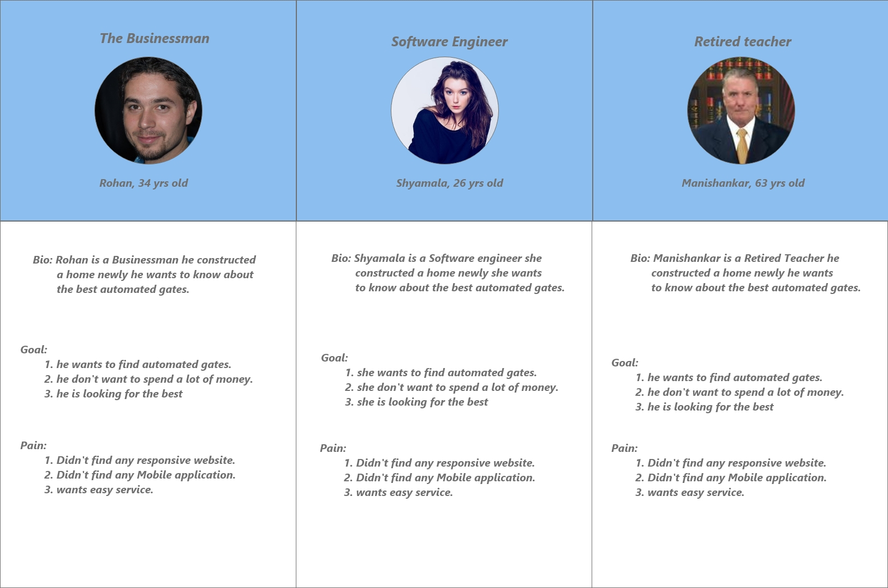Persona Creation:
Next, I used all of the qualitative data i gathered during the research process to create Santhosh, my persona. Santhosh spent his childhood living in many countries and cultivated a passion for Automation. He seeks to find the best company.

Point of View Statements & How Might We Questions:
After wrapping up primary research, I dug deeper into the insights and needs I had generated. First, I restructured insights into POV statements, an actionable problem statement that defines the design challenge. Next, I restructured those POV statements into How Might We questions that would generate solution-oriented brainstorming.
Define and Ideate
Now that I had empathized with target users & identified their needs, I needed to define the solution. I reflected on the on the business goals,user goals & technical considerations to find a happy medium for all stakeholders. once I had identified common goals, I could decide what product features were necessary for the prototype.
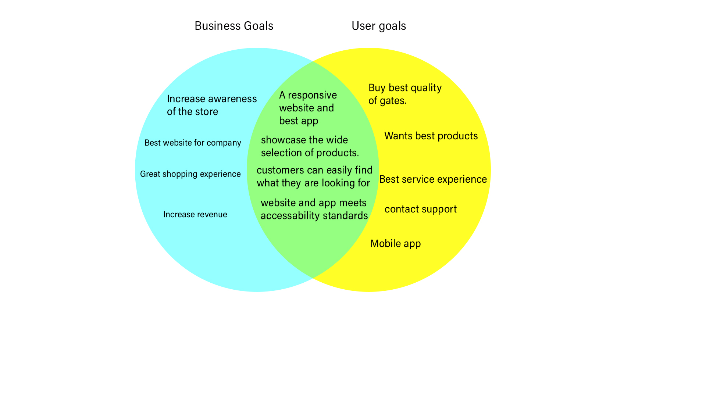Information Architecture
I created a high-level list of site features to further define and guide the vision for the product. Prioritizing the features with supporting research created a clear order of execution.
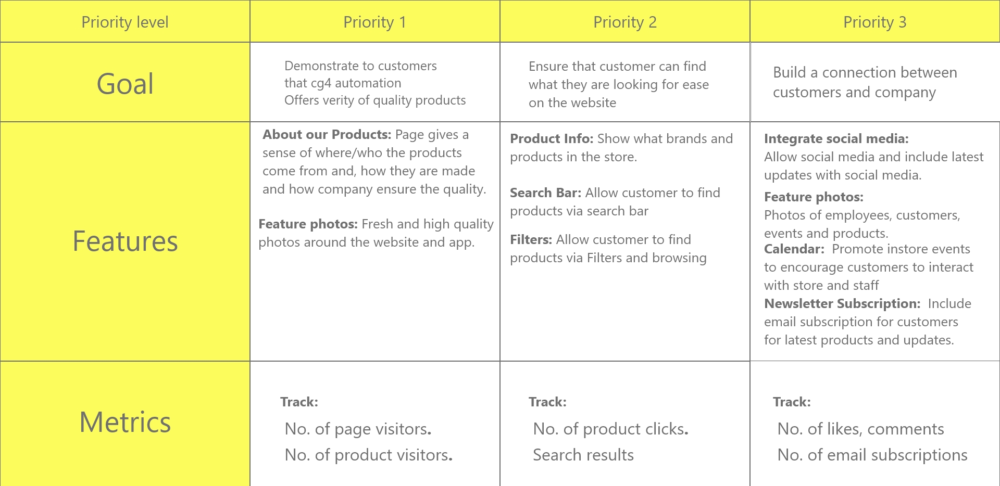Based on response trends, I created a site map which laid out the structure and organization of the content on the site.
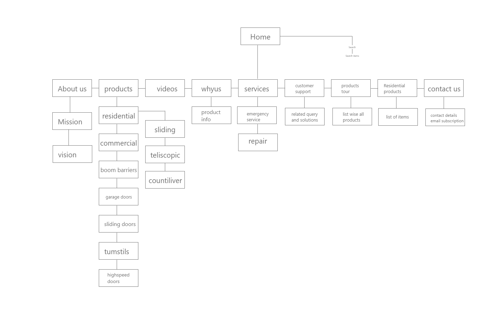Interaction Design
I completed a task flow and user flow to imagine the ways a user might navigate through the site to achieve their goals. These tools allowed me to ensure that the information was organized in a way that is intuitive to the user.
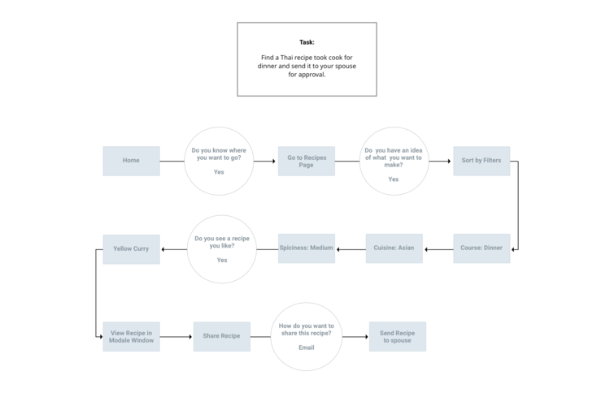 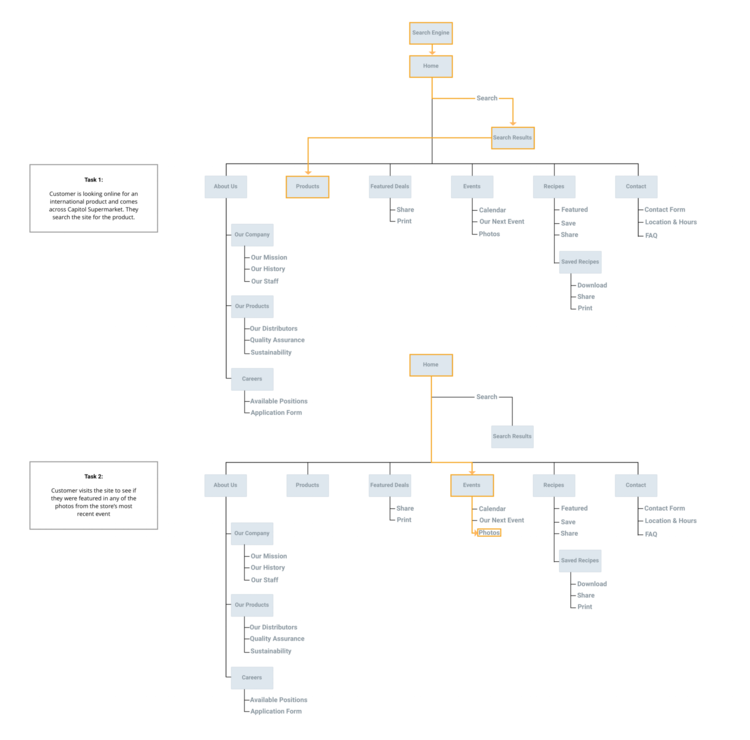Design and Testing
I began the process of wireframing with sketches of variations of the website new feature page. during the process I through about how the layout and content could be structured to satisfy user and business goals in a technically feasible way. the sketch I chose served as a guide for my digital wireframes.
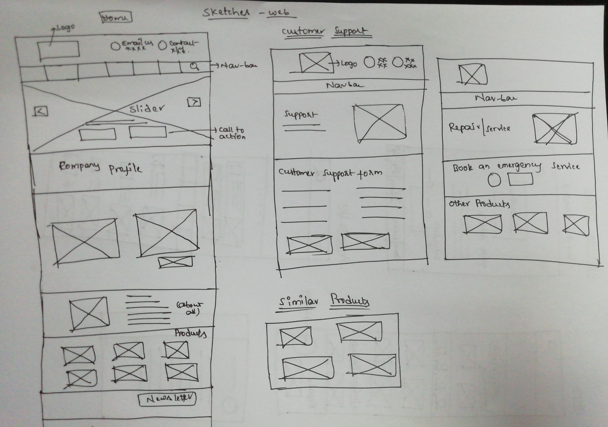 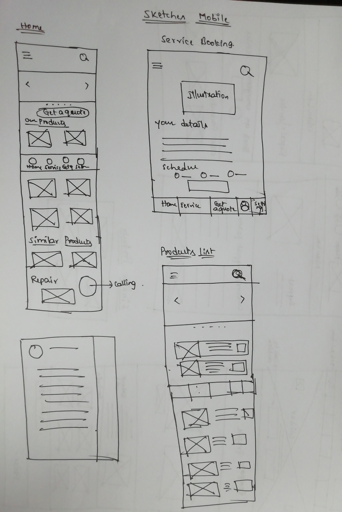Low Fidility Wireframes
I created a low fidility prototype of the desktop site in Adobe Xd. I created a UI requirements documents to outline all of the features and elements I wanted to incorporate into the design
 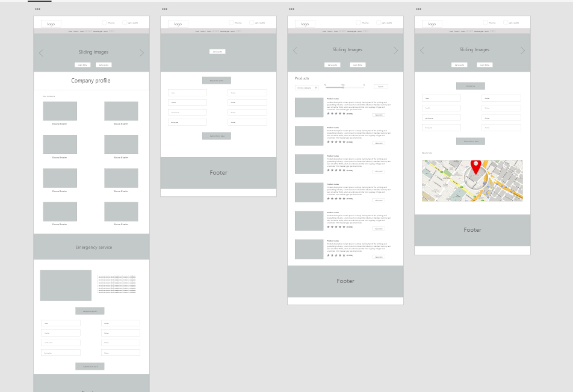
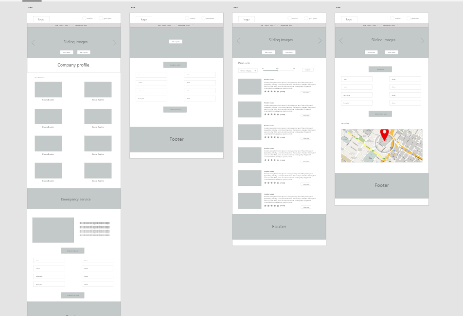
Responsive Design:
At this point in the design process, I needed to think about how I wanted the site to look on different screen sizes. It was essential that the website would present as well on tablet and mobile devices as it did in desktop size.
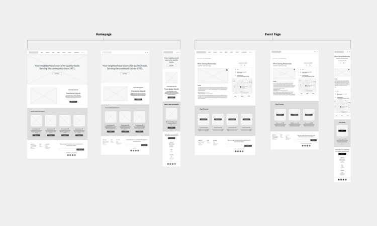Usability testing
I asked 5 participants to testout the prototypes usability. the participant pool was comprised of men and women between ages 18 to 55 who used this.
Tasks
- Book a slot for service
- find the product what you want and order through online
- do it above tasks in mobile app
Affinity Mapping
I created an affinity map to organize and synthesize the responses and observations I captured using testing. I uncovered insights, which I reconstructed into a list of recommendations. I organized these by priority level (high to low) as a way of determine what needed to be changed immediately and what could be saved for later.
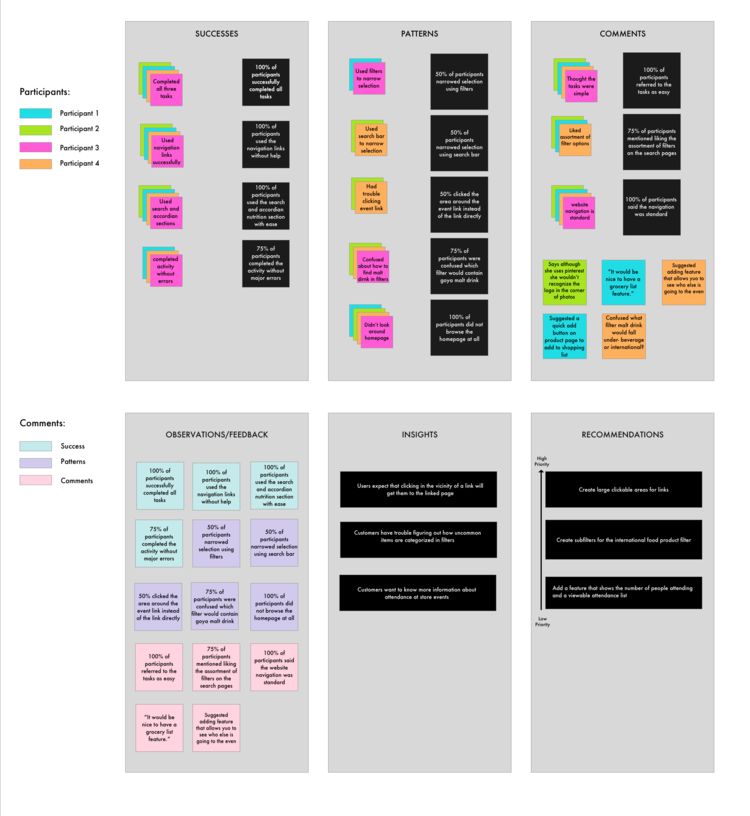Findings
Overall, users navigated through the website without difficulty. 100% of users referred to the tasks as either simple or easy. Confusion most often stemmed from issues choosing filters for uncommon products or technical issues with the InVision app. More usability tests will have to be conducted on other site features such as the reviews section placement and the grocery list feature once it’s complete.
High Fidility Wireframes
After several iterations of my low fidility prototype I flushed out details of each page with images,typography, navigation menu etc
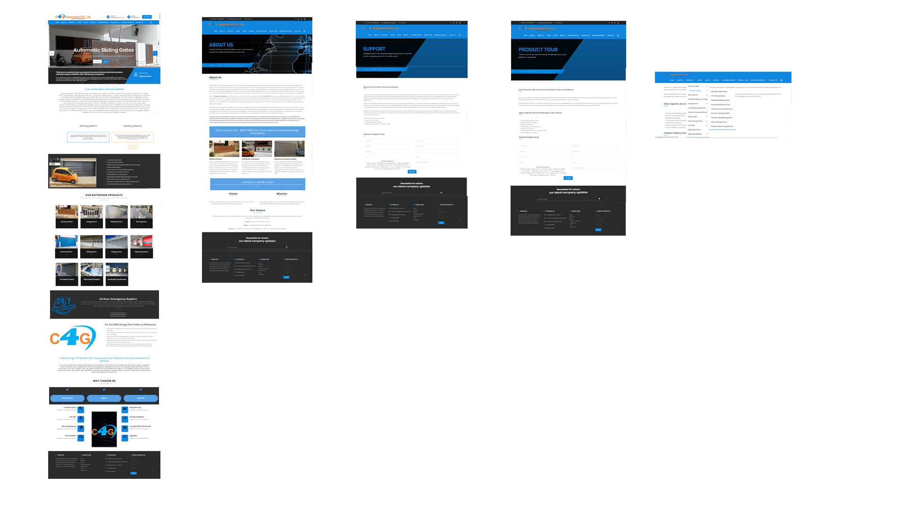 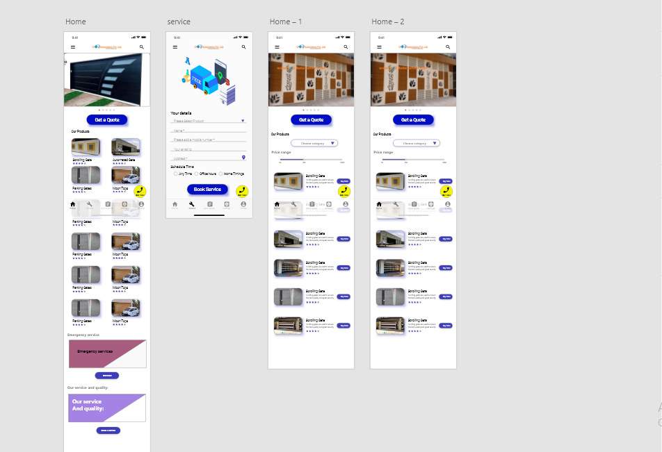While the feedback was mostly positive from participants, the prototype is far from perfect. I plan on fleshing out the rest of the pages of the prototype, especially for mobile bookings. I plan to continue the iterative cycle of testing and updating the prototype. I will use Zeplin to hand off the design to the developer team when I have made all improvements to the prototype.